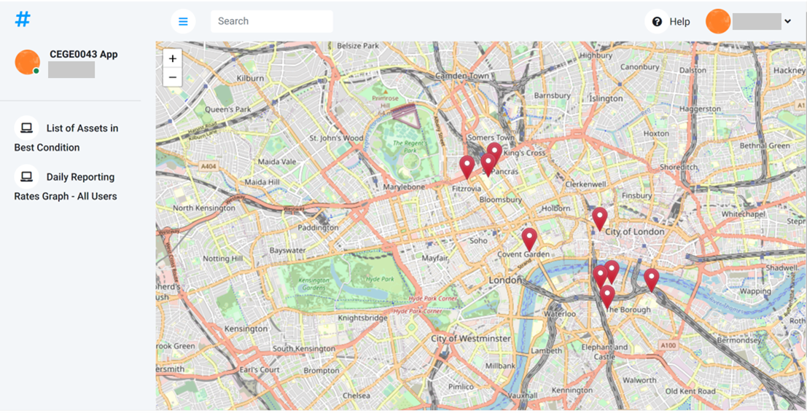
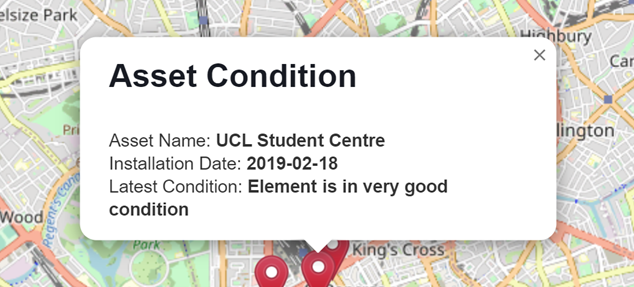
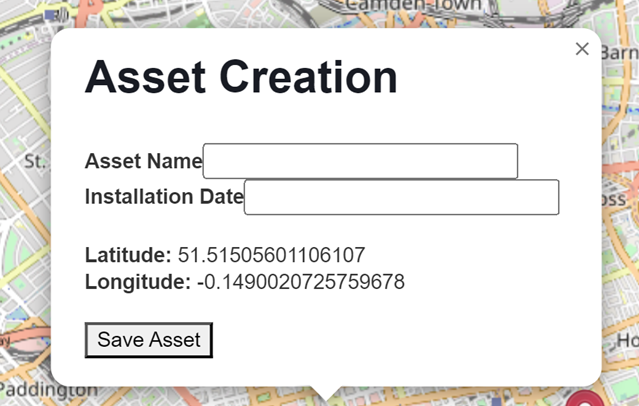
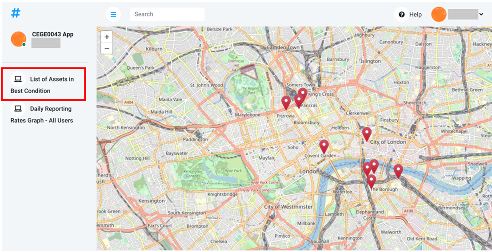
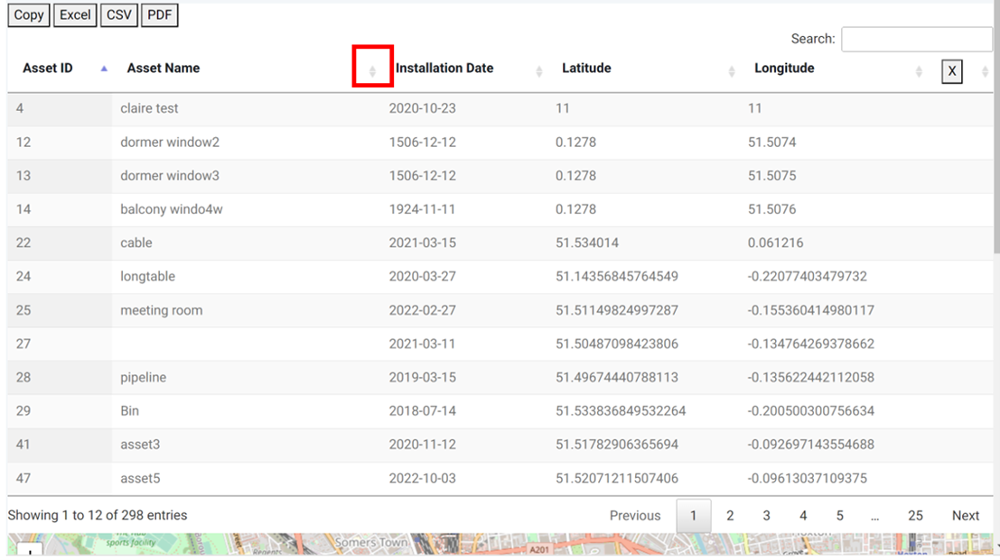
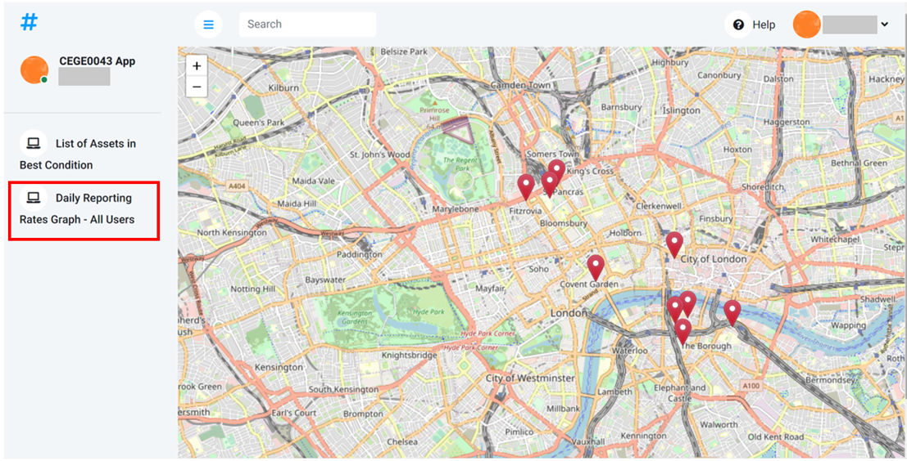
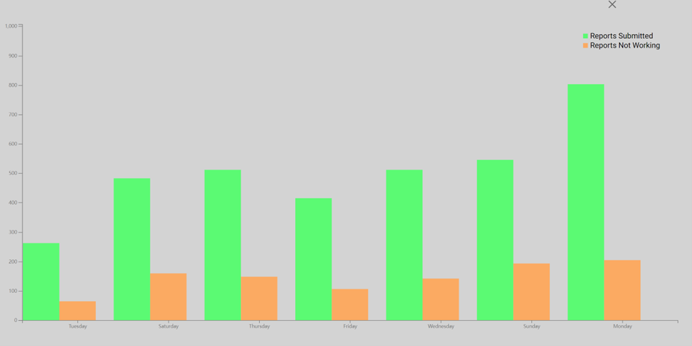

User Guide for Asset Creation App
Summary
The main functionality of this app is to help the user to create new assets at specific locations and upload the asset information to the database. It also includes two additional functionalities in the left-side menus, which can help the user to check the assets from a more general perspective.
Asset Creation
When you open the app, the app will, by default, show the asset points that you have created in the past.

And if you click the asset point, you will see a popup showing the asset's latest condition information. The page will only show the empty map if you haven't created any assets.

To create new assets, you need to find the location of the purchase on the map and click that point. You will see an asset creation form which shows your asset's location like this:

Fill in your asset's Asset Name and Installation Date, then click the Save Asset button to upload your data.
After your submission, the form will close automatically, and your new asset point will be immediately shown on the map.
NB: 1. Asset Name should NOT include special characters other than whitespaces. Upper and lower letters both work.
2. Installation Date should be in the form of “YYYY-MM-DD”, e.g. 2023-04-13)
3. Neither of Asset Name or Installation Date should be empty. Otherwise, you will get an error alert.
4. Make sure your asset name is UNIQUE. Otherwise, you will get an error that causes the breaking down of the app.
App Menus
List of Assets in Best Condition
You can click the menu “List of Assets in Best Condition” to list all the assets with at least one report (at any point in time) saying they are in the best condition.

The result of the list should look like this:

You can check the data in different orders for each column by clicking the button in the red box (up-direction for increasing order; down-direction for descending order). You can also find specific asset(s) according to your need or condition by tying information in the search bar on the top right of the table. In addition, you can download the data as Excel, CSV or PDF by clicking the format buttons on the top left of the table. After finishing your work, click the “X” button on the top right to close the table.
List of Assets in Best Condition
You can click the menu “Daily Reporting Rates Graph – All Users” to show daily reporting rates for the past week (how many reports have been submitted, how many reports have the worst condition values).

The result should look like this:

NB: 1. Click the “X” button on the top right to close the graph.
2. For both menus, if the table or the graph shows incomplete information, you can zoom out the map to see the whole image.